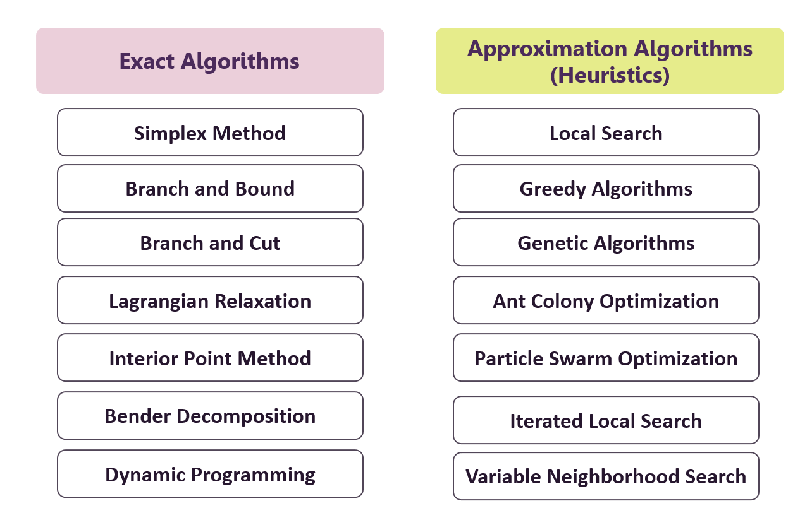

Tổng quan về Quy hoạch toán học (Mathematical Programming)
Posted: 11/03/2026
Khi đi sâu hơn vào Vận trù học (Operations Research - OR), chúng ta sẽ thấy rằng phần kỹ thuật cốt lõi và được sử dụng rộng rãi nhất chính là Quy hoạch toán học (Mathematical Programming - MP). Thực tế, trong nhiều trường hợp, khi nhắc đến OR, người ta đang nói đến MP. Điều này không phải ngẫu nhiên. Quy hoạch toán học là một nhánh kỹ thuật được phát triển từ rất sớm trong Operation Research và đóng vai trò trung tâm trong việc giải quyết các bài toán tối ưu. Mảng này tập trung vào việc tìm giá trị lớn nhất hoặc nhỏ nhất của một hàm số, trong khi vẫn phải thỏa mãn một tập các điều kiện ràng buộc. Trong bài viết này, tôi sẽ giới thiệu những phần khái quát về các kỹ thuật thường được sử dụng phổ biến trong Quy hoạch toán học.
Lập Mô hình tối ưu
Trước khi áp dụng các thuật toán để tìm nghiệm tối ưu, bước quan trọng đầu tiên là chuyển đổi bài toán thực tế thành một mô hình tối ưu. Quá trình này được gọi là mô hình hóa, trong đó ta xác định các biến quyết định, xây dựng hàm mục tiêu và thiết lập các ràng buộc phản ánh những điều kiện hoặc giới hạn của bài toán. Khi mô hình tối ưu đã được thiết lập, các thuật toán tối ưu sẽ được sử dụng để tìm ra nghiệm tốt nhất thỏa mãn các ràng buộc đó.
Xét một ví dụ đơn giản trong bài toán sản xuất: một doanh nghiệp sản xuất nhiều loại sản phẩm khác nhau, mỗi loại có giá bán và chi phí sản xuất riêng. Doanh nghiệp muốn xác định số lượng sản xuất của từng loại sản phẩm sao cho tổng lợi nhuận đạt mức tối đa, trong khi tổng chi phí không vượt quá ngân sách cho phép. Để giải bài toán này, ta đặt các biến đại diện cho số lượng của từng sản phẩm, xây dựng hàm mục tiêu là tổng lợi nhuận cần tối đa hóa, đồng thời thiết lập các ràng buộc về ngân sách và các điều kiện sản xuất liên quan. Sau đó, các phương pháp tối ưu sẽ được áp dụng để tìm ra phương án sản xuất tối ưu. Dưới đây là mô hình toán học của bài toán trên:
$$ \begin{align*} \text{Maximize } & Z = \sum_{j \in J} (p_j - c_j) x_j \\ \text{s.t. } & \sum_{j \in J} c_j x_j \le B \\ & \sum_{j \in J} a_{ij} x_j \le b_i \quad \forall i \in I \\ & x_j \ge 0, \quad x_j \in \mathbb{Z}^+ \text{ (nếu cần nguyên)} \end{align*} $$
Trong đó:
- xj : số lượng sản phẩm j được sản xuất
- pj : giá bán mỗi đơn vị sản phẩm j
- cj : chi phí sản xuất mỗi đơn vị sản phẩm j
- B : tổng ngân sách cho phép
- aij : lượng tài nguyên i cần cho một đơn vị sản phẩm j
- bi : tổng tài nguyên i sẵn có
- J : tập các loại sản phẩm
- I : tập các loại tài nguyên
Tùy vào đặc điểm của mô hình tối ưu, các bài toán trong quy hoạch toán học có thể được phân loại thành nhiều dạng khác nhau, chẳng hạn như:
- Quy hoạch tuyến tính (Linear Programming)
- Quy hoạch nguyên (Integer Programming)
- Quy hoạch hỗn hợp nguyên (Mixed-Integer Programming)
- Quy hoạch phi tuyến (Nonlinear Programming)
- Quy hoạch ngẫu nhiên (Stochastic Programming)
- Quy hoạch robust (Robust Programming)
Trong phạm trù Quy hoạch toán học, có hai nhóm phương pháp/thuật toán lớn được sử dụng để giải các mô hình tối ưu là:
- Thuật toán chính xác (Exact Algorithms)
- Thuật toán xấp xỉ (Approximation Algorithms)

Thuật toán chính xác (Exact Algorithms)
Các thuật toán chính xác luôn đi liền với các mô hình tối ưu. Một khi vấn đề đã được biểu diễn dưới dạng biến số, hàm mục tiêu và ràng buộc, Exact Algorithms sẽ tìm nghiệm tối ưu cho mô hình đó.
Điểm quan trọng nhất của nhóm phương pháp này là:
Nếu thuật toán kết thúc thành công, nghiệm tìm được là tối ưu – tức không tồn tại lời giải nào tốt hơn.
Một số phương pháp phổ biến trong nhóm này bao gồm:
- Simplex Method (Đơn hình): Phương pháp cơ bản để giải các bài toán Linear Programming (LP). Thường được dạy trong môn Quy hoạch Tuyến tính tại các trường Đại học tại Việt Nam. Nó di chuyển theo các cạnh của feasible region từ một corner-point đến corner-point khác, tối ưu dần hàm mục tiêu. Phù hợp với các bài toán LP kích thước vừa và nhỏ, và là cơ sở cho nhiều phương pháp nâng cao.
- Branch and Bound: Một kỹ thuật giải Integer Programming (IP) và Mixed-Integer Programming (MIP), sử dụng phân tách không gian nghiệm thành các nhánh nhỏ hơn (branching) và sử dụng các giới hạn trên/dưới (bounds) để loại bỏ các nhánh không/ít liên quan. Thuật toán đảm bảo tìm global optimum, nhưng computation cost có thể tăng theo số biến.
- Branch and Cut: Thuật toán vừa phân nhánh không gian nghiệm, vừa thêm các cuts để loại bỏ các nghiệm không nguyên, giúp cải thiện hiệu quả so với Branch and Bound thuần túy.
- Lagrangian Relaxation: Phương pháp giải quyết các bài toán IP/LP phức tạp bằng cách thả lỏng một số ràng buộc vào hàm mục tiêu thông qua các multiplier (Lagrange multipliers). Nó giúp tạo ra bài toán dễ giải hơn trong khi vẫn cung cấp upper/lower bounds cho nghiệm tối ưu.
- Interior Point Method: Thuật toán giải LP bằng cách di chuyển trong vùng khả thi (interior) thay vì đi theo các cạnh như Simplex. Phương pháp này thường hiệu quả với LP kích thước lớn và có tính ổn định cao khi số biến và ràng buộc nhiều.
- Column Generation: Kỹ thuật giải LP hoặc Large-scale LP bằng cách chỉ xét một tập con các biến ban đầu và từ từ thêm các cột mới nếu chúng có tiềm năng cải thiện hàm mục tiêu. Thường dùng trong các bài toán logistics, routing và cutting stock problems.
- Benders Decomposition: Phương pháp tách một bài toán lớn thành 1 problem lớn và các subproblem nhỏ hơn. Giải pháp được cải thiện lặp đi lặp lại bằng cách truyền thông tin giữa problem lớn đó và các subproblem, thường được sử dụng cho Mixed-Integer Programming và các bài toán có cấu trúc block.
Những phương pháp này có nền tảng lý thuyết chặt chẽ và đảm bảo tính tối ưu. Tuy nhiên, nhược điểm của chúng là tốn nhiều thời gian và tài nguyên tính toán, đặc biệt với các bài toán có quy mô lớn (nhiều biến số và ràng buộc). Chính vì vậy, trong thực tế, Exact Algorithms thường phù hợp với các bài toán quy mô nhỏ hoặc trung bình.
Thuật toán xấp xỉ (Approximation Algorithms / Heuristics)
Khi bài toán trở nên quá lớn và phức tạp, việc tìm nghiệm tối ưu tuyệt đối có thể mất rất nhiều thời gian – đôi khi là không khả thi trong điều kiện thực tế. Lúc này, một hướng tiếp cận khác được sử dụng: các thuật toán xấp xỉ, hay còn gọi là Heuristics.
Khác với Exact Algorithms, Heuristics không đảm bảo nghiệm tìm được là tối ưu tuyệt đối. Thay vào đó, mục tiêu của chúng là:
Tìm lời giải đủ tốt trong thời gian hợp lý.
Trong nhiều tài liệu, Approximation Algorithms và Heuristics có sự phân biệt về mặt lý thuyết. Tuy nhiên, đối với Operation Research, nhiều tài liệu sử dụng 2 thuật ngữ này thay thế nhau, cùng để chỉ các phương pháp giải “nhanh” với nguồn lực có hạn, chấp nhận kết quả “đủ tốt” thay vì kết quả tốt nhất.
Các thuật toán này không đòi hỏi các kỹ thuật toán học phức tạp, đặc điểm của chúng là xuất phát từ hướng tư duy “cảm tính” của con người. Bản thân từ “heuristics” cũng mang nghĩa là “xuất phát từ kinh nghiệm” trong tiếng Anh, và có thể dịch ra tiếng Việt là “suy nghiệm”. Điều thú vị là chúng ta sử dụng tư duy heuristics mỗi ngày một cách vô thức. Một số phương pháp Heuristics phổ biến trong Operation Research bao gồm:
- Greedy : Là phương pháp chọn lựa tốt nhất tại mỗi bước, không xem xét ảnh hưởng về sau. Ưu điểm là đơn giản và nhanh chóng, nhưng có thể dẫn đến nghiệm không tối ưu.
- Local Search: Là phương pháp tập trung vào việc cải thiện nghiệm hiện tại từng bước một bằng cách di chuyển tới các nghiệm lân cận tốt hơn. Ưu điểm là đơn giản, nhanh chóng, nhưng dễ mắc kẹt tại nghiệm tối ưu cục bộ (local optimum).
- Tabu Search: Là mở rộng của Local Search, Tabu Search sử dụng một danh sách cấm (tabu list) để tránh quay lại những nghiệm đã thăm trước đó. Điều này giúp vượt qua các điểm tối ưu cục bộ và khám phá không gian nghiệm rộng hơn
- Simulated Annealing: Thuật toán lấy cảm hứng từ quá trình làm lạnh kim loại trong vật lý, cho phép chấp nhận những bước đi “tệ hơn” với một xác suất giảm dần theo thời gian. Cơ chế này giúp thoát khỏi cực trị cục bộ (local optimum) và tiến dần tới nghiệm tối ưu toàn cục (global optimum).
- Variable Neighbourhood Search: Thuật toán này thay đổi kích thước hoặc kiểu tập nghiệm xung quanh (neighbourhood) trong quá trình tìm kiếm, nhằm tìm kiếm nhiều hơn các giải pháp trong không gian nghiệm.
- Ant Colony Optimization: Lấy cảm hứng từ hành vi tìm đường của kiến, mỗi “con kiến” để lại pheromone đánh dấu các đường đi tốt, từ đó hướng dẫn các con kiến khác. Thuật toán này đặc biệt mạnh trong các bài toán tối ưu lộ trình, vận tải và mạng (network design).
- Genetic Algorithm: Lấy cảm hứng từ quá trình tiến hóa trong sinh học, Genetic Algorithm sử dụng các khái niệm như sinh sản, đột biến và chọn lọc để tìm kiếm nghiệm tối ưu. Phương pháp này thường hiệu quả trong việc giải các bài toán phức tạp với không gian nghiệm lớn.
Sự phức tạp của các bài toán tối ưu trong thực tế đòi hỏi sự phát triển của các phương pháp, với xu hướng là kết hợp các giải thuật khác nhau. Vài năm gần đây, dựa vào ưu điểm của 2 loại thuật toán chính xác và xấp xỉ, một nhóm thuật toán mới đã được phát triển và mang lại hiệu quả cao trong việc giải các bài toán Operation Research, mang tên Matheuristics (math-heuristics). Thậm chí Heuristics còn được kết hợp với các kỹ thuật khác như Mô phỏng (Simulation), Machine Learning,...
Sự phát triển mở rộng của Operation Research
Mặc dù Quy hoạch toán học là nền tảng cốt lõi của OR, trong những năm gần đây, nhiều nhánh kỹ thuật khác cũng được tích hợp vào lĩnh vực này:
- Simulation
- Data Envelopment Analysis
- Queueing Theory
- Markov Chains
- Neural Network
Điều này cho thấy Operation research không phải là một lĩnh vực khép kín, mà là một hệ sinh thái các phương pháp định lượng, liên tục mở rộng và kết nối với Thống kê, Khoa học dữ liệu và Trí tuệ nhân tạo.
Kết lại
Tóm lại, Quy hoạch toán học là trụ cột kỹ thuật của Operation Research. Nó cung cấp cấu trúc để mô hình hóa vấn đề và hệ thống thuật toán để giải chúng. Hai nhóm phương pháp chính là Exact Algorithms và Heuristics, đại diện cho hai cách tiếp cận khác nhau: một bên đảm bảo tối ưu tuyệt đối, một bên ưu tiên tốc độ tính toán và tính khả thi.
Theo thời gian, chúng ta chứng kiến sự phát triển mạnh mẽ của các thuật toán trong Operation Research. Các thuật toán và sự kết hợp mới vẫn đang tiếp tục được nghiên cứu để giải quyết nhiều vấn đề phức tạp trong đời sống một cách hiệu quả. Tất nhiên, việc sử dụng phương pháp nào phụ thuộc vào đặc điểm của bài toán, cũng như mục tiêu và nguồn lực của nhà quản lý, doanh nghiệp và tổ chức.